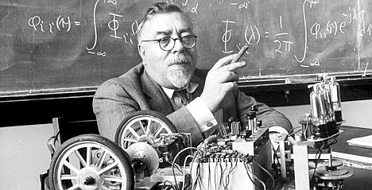
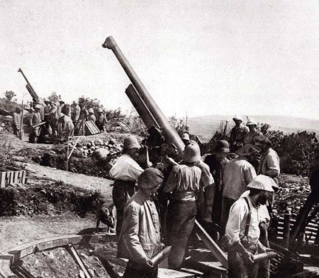
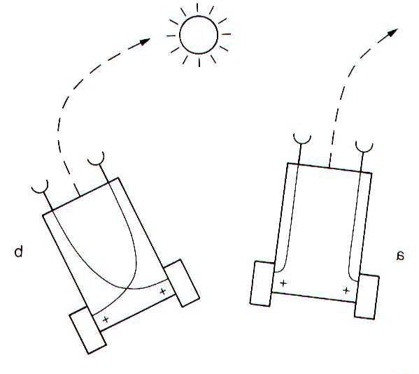
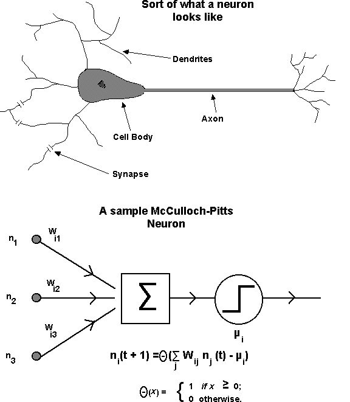
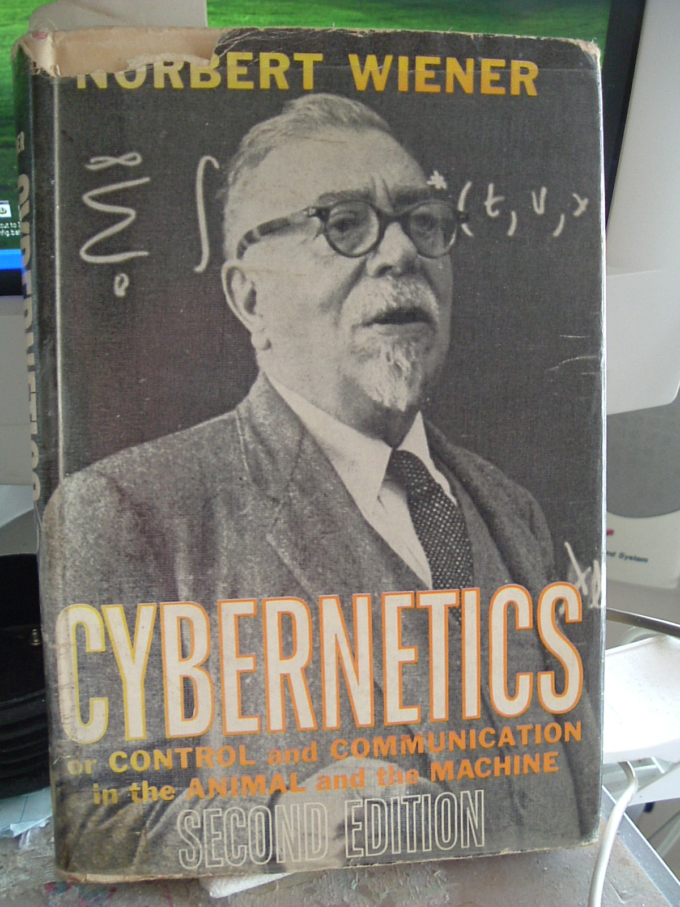
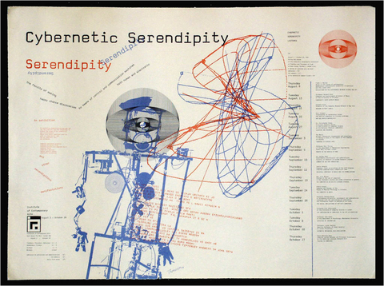
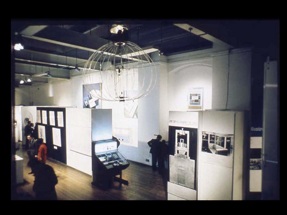
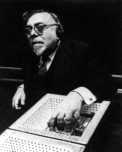

Norbert Wiener. Men, Machines, and the World About. 1954.
First published in Medicine and Science, 13-28, New York Academy of Medicine and Science. Ed. I. Galderston, New York: IUP, 1954.
A close reading.

The author: Norbert Wiener (November 26, 1894 – March 18, 1964), mathematician and philosopher. Harvard awarded Wiener a Ph.D. in 1912, when he was merely 17 years old, for a dissertation on mathematical logic. In 1914, Wiener traveled to Europe, to be taught by Bertrand Russell at Cambridge University, and by David Hilbert at the University of Göttingen. (Russell was the foremost figure of philosophy and logic of his day; Hilbert was one of the most influential and universal mathematicians of the 19th and early 20th centuries.)
Although Wiener eventually became a staunch pacifist, he eagerly contributed to the war effort in World War I. Thereafter he was Professor of Mathematics at MIT. Wiener became an early researcher in stochastic and noise processes, contributing work relevant to electronic engineering, electronic communication, and control systems. During World War II, his work on the automatic aiming and firing of anti-aircraft guns caused Wiener to investigate information theory (independently of Claude Shannon).
Wiener is considered the originator of cybernetics, a formalization of the notion of feedback, with implications for engineering, systems control, computer science, biology, art, philosophy, and the organization of society.
Wiener helped develop the theories of cybernetics, robotics, computer control, and automation. He shared and credited theories and findings, including Soviet researchers; Wiener's acquaintance with them caused him to be regarded with suspicion during the Cold War. He was a strong advocate of automation to improve the standard of living, and to end economic underdevelopment. After the war, Wiener became increasingly concerned with what he believed was political interference with scientific research, and the militarization of science.
Norbert Wiener. Men, Machines, and the World About. 1954.
I want to point historically to the various things that got me interested in the problems of man, machines, and the world about, because they are relevant to the various things I shall have to say about the *present status* of the problem.
What is the present status? What are the conditions in 1940's, when the field of cybernetics began? This is now more than two generations ago. What will the conditions be in another sixty years?
There were two converging streams of ideas that brought me into cybernetics. One of them was the fact that in the last war, or when it was manifestly coming, at any rate before Pearl Harbor, when we were not yet in the conflict, I tried to see if I could find some niche in the war effort. In that particular problem, I looked for something to do, and found it in connection with automatic computing machines.
Here Wiener is not talking about digital computers as we understand them today, but about mechanical, analog machines.
Automatic computing machines, of what is called an analogy sort, in which physical quantities are measured and not numbers counted, had already been made very successfully by Professor Vannevar Bush, but there were certain gaps in the theory.
One of the gaps I can express mathematically by saying that these machines could do ordinary differential equations but not partial differential equations. I shall express it physically by the fact that these machines could work in one dimension, namely, time, but not in any efficient way in two dimensions, or three.
Now, it occurred to me that (a) the use of television had shown us a way to represent two or more dimensions on one device; and (b) that the previous device which measured quantities should be replaced by a more precise sort of device that counted numbers.
These were not only my ideas, but at any rate, they were ideas that I had then, and I communicated them in a memorandum to Vannevar Bush, who was in charge of scientific war planning for the entire country. The report that I gave was, in many ways, not in all, a substantial account of the present situation with automatic computing machines. Thus, I had already become familiar with the idea of the machine which does its arithmetic by making choices on the basis of previous choices, and these on the basis of previous choices, and so on, according to a schedule furnished to the machine by punched tape, or by magnetized tape, or other methods of the sort.
Which is to say, a programmable machine with control flow.

The other thing which led me to this work was the problem that I actually got put into a war work. It turned out that at that time Professor Bush did not feel that this contribution was immediate enough to have been effective in the last war. So I looked around for another thing, and the great question that was being discussed at that time was antiaircraft defense. It was at the time of the Battle of England and the existence of the United States as a combatant country—the survival of anybody to combat Germany—seemed to depend on antiaircraft defense.
The antiaircraft gun is a very interesting type of instrument. In the First World War, the antiaircraft gun had been developed as a firing instrument, but one still used range tables directly by hand for firing the gun.
That meant, essentially, that one had to do all the computation while the plane was flying overhead, and, naturally, by the time you got in position to do something about it, the plane had already done something about it, and was not there.
Calculation itself takes non-negligible time, which for certain tasks is already too late. What is needed is a simulation model that can be used for continuous, real-time prediction.
It became evident—and this was long before the work that I did—by the end of the First World War, and certainly by the period between the two, that the essence of the problem was to do all the computation in advance and embody it in instruments which could pick up the observations of the plane and fuse them in the proper way to get the necessary result to aim the gun and to aim it, not at the plane, but sufficiently ahead of the plane, so that the shell and the plane would arrive at the same time as induction. That led to some very interesting mathematical theories.
I was curious about the term induction here, and I wonder if it is in contrast with deduction. Inductive reasoning is a method of reasoning in which the premises are viewed as supplying some evidence for the truth of the conclusion (which is not certain). In contrast, deductive reasoning is a process of computing from one or more statements (premises) logically certain conclusion. A third form of reasoning, known as "abductive", attempts to suggest a prior explanation of some observations. Inductive and abductive reasoning are hypothesis-forming.
I had some ideas that turned out to be useful there, and I was put to work with a friend of mine, Julian Bigelow. Very soon we ran into the following problem: the antiaircraft gun is not an isolated instrument. While it can be fired by radar, the equivalent and obvious method of firing it is to have a gun pointer. The gun pointer is a human element; this human element is joined with the mechanical elements.
The actual fire control is a system involving human beings and machines at the same time. It must be reduced, from an engineering point of view, to a single structure, **which means either a human interpretation of the machine, or a mechanical interpretation of the operator, or both**.
By taking an essentially mathematical approach to the problem, Wiener is forced to consider the human and machine in equivalent terms in order to model them. What is interesting is the subsequent extrapolation of this way of considering the extent to which machines and humans can be seen through the same categories.
We were forced—both for the man firing the gun and for the aviator himself—to replace them in our studies by appropriate machines. The question arose: How would we make a machine to simulate a [human] gun pointer, and what troubles would one expect with the situation?
There is a certain sort of control apparatus used for controlling speed in the governors of steam engines that is used for controlling direction in the ship-steering apparatus, which is called a negative feedback apparatus. In the ship-steering apparatus, the quartermaster who turns the wheel does not move the rudder directly. The rudder is much too heavy in the modern ship for a dozen quartermasters to do that. What he does is to move an element in the steering-engine house which is connected with the tiller of the ship by another element. **The difference between the two positions is then conveyed to the steering engines** of the two sides of the ship to regulate the admission of steam in the port or starboard steering engine. The steering engine moves the rudder head, the tiller, in such a way as to cancel this interval that has been placed between this moving element and the rudder head, and in doing that it recloses the valves and moves the rudder with the ship. In other words, the rudder is moved by something representing the difference between the commanded position and in its own actual position. That is called **negative feedback.**
In a regime of negative feedback, an initial seed of difference is gradually erased, but the larger system is thus changed. Negative feedback control is now a core component of modern engineering (though the ancestry in cybernetics is rarely observed). But what Wiener is really saying here is that negative feedback may be the way humans (and natural systems) achieve goals. We may compare this to Valentino Braitenberg's Vehicles analogy.

This negative feedback, however, has its diseases. There is a definite pathology to it which was already discussed—you will be rather astonished at the date—in 1868, by the great physicist, Clerk Maxwell, in a paper in the Proceedings of the Royal Society in London. If the feedback of the rudder, or the governor, is too intense, the apparatus will shoot past the neutral position a little further than it was originally past it on one side—will shoot further past it on the other—and will go into oscillation.
This is also known as hunting, or ringing. If the feedback is stronger than unity it becomes positive feedback, in which the oscillation becomes increasingly amplified, like the howling of microphone and speaker. Although this phenomenon can be catastrophic for many situations, there are some applications in which it is desired: many audio sound-generators (both analog and digital) depend intrinsically on such self-oscillation.

Since we thought that the simplest way that we could explain human control was by a feedback, we wondered whether this disease would occur. We went with the following question to our friend, Dr. Arturo Rosenblueth, a physiologist, who was then Cannon’s right-hand man in the Harvard Medical School: Is there any nervous disease known in which a person trying to accomplish a task starts swinging wider and wider, and is unable to finish it? For example, I reach for my cigar. I suppose the ordinary way I control my action is so as to reduce the amount by which the cigar has not yet been picked up. Is that disease of excessive oscillation known?
The answer was most definitely that this disease is known. It has exactly the symptoms named. It occurs in the pathology of the cerebellum, the little brain. It is known as purpose tremor or cerebellar tremor.
Well, that gave us the lead. **It looked as if a common pattern could be given to account for human behavior and controlled machine behavior** in this case, and that it depended on negative feedback. That was one of the leads we had. The other lead went back to the study of the automatic controlling machine, the automatic computing machine.
Negative feedback is a general mechanism with independently evolved expressions in human and artificial systems; and through which man-machine interaction may be augmented.
Are there other such general mechanisms?
In the first place, automatic computing machinery is of no value except for one thing: its speed. It is more expensive than the ordinary desk machine, enormously more. You do not get anything out of it unless you use it at high speed. But to use a machine at high speed, it is necessary to see that every operation it carries out is carried out at a corresponding speed. If you mix in slow stages with fast stages of the machine, the slow stages always win out.
They more nearly govern the behavior of the machine than the fast stages. Therefore, the commands given to a high-speed computing machine cannot be given by hand, while the machine is running. They must be built in in advance to what is called a taping, like punched cards, like punched tape, like magnetic tape, or something of the sort; and your machine must not only control the numbers and their combinations, but the scheduling of operations. Your machine must be a logical machine.
The argument here takes us from analog, direct manipulation machines, through higher-level switching systems, to digital, symbolically programmed machines (closer to computers as we think of them today). I find it fascinating that the reason for this jump is based on (real-)time and control/interaction.
Of course, it is no longer true that automatic computing machinery is enormously expensive; and punched tape is archaic.
Do you agree that speed is the only value of computing?
Do you agree that it makes no sense to input commands while it is running?
There again we found a great similarity to what a human being was doing. The human nervous system, it is perfectly true, does not exhaust all of human control activity. There is, without any doubt, a control activity in man that goes through hormones, that goes through the blood, and so on.
Far less computational research has followed hormonal or vascular analogies than nervous system analogies. Has something important been missed?
But, as far as the nervous system works, the individual fibers come very near to showing an “all or none” action, that is, they fire or they do not fire; they do not fire halfway. If your individual fibers leading to a given fiber, and connected to it by what is known as a synapse, fire in the proper combination—perhaps at least as many as a certain number—and if certain so-called inhibitory fibers do not interrupt them, the outgoing fibers fire. Otherwise they do not.
This description is derived from the theory of biological neurons of his day, as well as the mathematical abstraction of it described by Warren McCulloch and Walter Pitts (active in the earliest cybernetics) in the 1940's:

The neural firing system is a continuous ("analog") phenomenon that results in a discrete ("digital") signal by means of thresholding and hysteresis.
(It should be noted that the McCulloch-Pitts model of the neuron gave birth to the field of artifiical neural networks, which underlie the machine learning/AI systems so prevalent today, which can outperform humans in an increasing range of tasks and problem spaces.)
This is an operation of connected switching extremely like the connected switching of the automatic computing machine. This led us to another comparison between the nervous system and the computing machine, and led us, furthermore, to the idea that since the nervous system is not only a computing machine but a control machine, that we may make very general control machines, working on the successive switching basis and much more like the control machine part, the scheduling part of a computing machine, than we might otherwise have thought possible. In particular, it seemed to us a very hopeful thing to make an automatic feedback control apparatus in which the feedback itself was carried out, in large measure, by successive switching operations such as one finds either in the nervous system or in the computing machine.
In finding that digital control is a general mechanism found in machines and in humans, is Wiener being anthropocentric? Bio-mimetic / bio-inspired? Or is he seeing man in terms of contemporary technology (just as Descartes compared animals to clockwork automata? But where Descartes sees this as grounds to separate mind and body, Wiener sees it as grounds to make artificial and natural one).
It was the fusion of these two ideas, each of which has a human or animal side and has a machine side, which led to **Cybernetics**. That book I wrote in response to a request from a French publisher, and I chose the name, for I felt that this particular combination of ideas could not be left too long unbaptized, took it from the Greek word κυβερναν meaning to govern, as essentially the art of the steersman.
Summarizing. Two general mechanisms: Negative feedback control, discrete switching feedback control. Two instances: life, machine. Cybernetics is thus “communication and control in the animal and machine.”

Cybernetics was firmly established by Wiener, McCulloch and others, such as W. Ross Ashby, mathematician Alan Turing, and W. Grey Walter (Walter for example was one of the first to build autonomous robots as an aid to the study of animal behaviour), but the influence of Cybernetics grew rapidly in influence after this book.
This seems a good point to look at what Cybernetics is, and what it became.
- A "Science concerned with the study of systems of any nature which are capable of receiving, storing and processing information so as to use it for control."—A. N. Kolmogorov
- A transdisciplinary approach for exploring regulatory systems, their structures, constraints, and possibilities.
- Relevant to the study of systems, such as mechanical, physical, biological, cognitive, and social systems
- Applicable when a system being analyzed is involved in a closed signaling loop; that is, where action by the system generates some change in its environment and that change is reflected in that system in some manner (feedback) that triggers a system change, originally referred to as a "circular causal" relationship.
- "The art of effective organization."—Stafford Beer
- "The art and science of manipulating defensible metaphors."—Gordon Pask
- "The ability to cure all temporary truth of eternal triteness."—Herbert Brun
- "The art of interaction in dynamic networks."—Roy Ascott
Concepts studied by cyberneticists/cyberneticians include, but are not limited to: learning, cognition, adaptation, social control, emergence, communication, efficiency, efficacy, and connectivity. Fields of study which have influenced or been influenced by cybernetics include game theory, system theory (a mathematical counterpart to cybernetics), artificial intelligence, perceptual control theory, sociology, psychology (especially neuropsychology, behavioral psychology, cognitive psychology), philosophy, architecture, organizational theory. (However in many of these fields the influence of cybernetics has been obscured.)
During the second half of the 20th century cybernetics itself evolved in ways that distinguish from a focus on observed systems, as characterized in Wiener's article here, from considering observing systems. This has become known as a "second-order" cybernetics, in that it considers the observer within the system being observed.
This diagram emphasizes the requirement for a possibly constructivist participant observer in the second order case: "...essentially your ecosystem, your organism-plus-environment, is to be considered as a single circuit." (Gregory Bateson and Margaret Mead). It views information as constructed and reconstructed by an individual interacting with the environment.
Cybernetics has also had immense influence on music and art, particularly in computational and digital forms. Cybernetics connects most significantly to art through interactivity (control and communication, human-machine interaction) as well as generative autonomy (the machine that can learn from experience, the extension of subjective into the machine, the replacement of human roles...), and through second-order cybernetics, embodied cognition, ecological thought, enactive performativity, etc.
"As feedback between persons increases and communications become more rapid and precise, so the creative process no longer culminates in the art work, but extends beyond it deep into the life of each individual. Art is then determined not by the creativity of the artist alone, but by the creative behaviour that his work induces in the spectator, and in society at large. ... The art of our time tends towards the development of a cybernetic vision, in which feedback, dialogue and involvement in some creative interplay at deep levels of experience are paramount. ... The cybernetic spirit, more than the method or the applied science, creates a continuum of experience and knowledge which radically reshapes our philosophy, influences our behaviour and extends our thought." Roy Ascott, "The Cybernetic Stance: My Process and Purpose," Leonardo 1, 1968.

One of the most significant early exhibitions of new media art (and one of the first art-science exhibitions) was Jasia Reichardt’s Cybernetic Serendipity, first shown at the Institute of Contemporary Arts, London in 1968, and then toured the United States. It included algorithmic and computer-generated music, responsive audio, self-destructive systems, dance choreography, sound- and light-sensitive machines, interactive vibrating sculptures, games, essay and poetry generating machines, computer graphics on plotters and CRTs, simulated Mondrian paintings, an interactive ecology of mobiles (designed by British cybernetician Gordon Pask), Nam June Paik, often considered the first video artist and the first to use television as an art object, painting machine by Jean Tinguely, computer-generated abstract film from John Whitney, and more.

There is now an online archive collecting documentation of this landmark event here, including the original catalog -- look through this, and read liberally! So much of the art and art-science of the 50 years since are prefigured here, and there is still so much to continue!
A good exploration can be found in Cybernetics and Art: Cultural Convergence in the 1960s Edward A. Shanken
Cybernetics has been seen negatively (like psychological behaviorism) and positively (in relation to both poststructuralism and Buddhism). Wiener's motivation however becomes devoted to social justice.

From here on, I can go ahead in very many ways. The first thing that I want to say is that the feedback mechanisms are not only well known to occur in the voluntary actions of the human body, but that they are necessary for its very life.
A few years ago, Professor Henderson of Harvard wrote a book entitled The Fitness of the Environment. Anybody who has read that book must regard it as very much of a miracle that any organism can live, and particularly a human organism. Man cannot exist over any variety of temperatures. For that matter, there is no active life, certainly not above the boiling point and below the freezing point, and most planets probably do not have temperatures lying in that convenient range. When I say “boiling point” and “freezing point,” I mean of water, because water is a very distinct and special sort of chemical substance.
Now, even a fish cannot exist at the boiling point. It can exist at something like our own temperature to something around the freezing point, perhaps a little bit below, but not much below.
We cannot do anything like that. We either have a chill or a fever if we get near it. The temperature at which life is possible does not vary for man for any extended period of time. It certainly does not vary much over ten degrees, and practically varies much less than that. Again, we must live under constant conditions of saltiness of our blood, of urea concentration in our blood, and so on.
How do we do this? The idea goes back to Claude Bernard and was developed very much by Cannon. We are full of what is called homeostatic mechanisms, which are mechanisms like thermostats. A homeostat is a mechanism which keeps certain bodily conditions within a narrow range.
One of those homeostats, located partly, at least, in the medulla, regulates temperature. Another one regulates breathing. Another one of them regulates urea concentration. That is the apparatus of the kidneys. There are not only a few, but many, many such controls.
Cybernetics thus led to a conception of life's task as needing to handle the many unpredictable sources of noise in an enviornment, the sources that could potential destroy the integrity of the organism's structure (most importantly, the feedback system itself). This conception is the root of Autopoiesis. It also leads to a conception of adaptive systems as observing systems, in what is known as the second-generation cybernetics. Note again that these are all general mechanisms, equally expressible in machinic or biological terms.
...There is another side to this which is also interesting. The homeostats in the body that I have spoken of are built into the human body. Can we make a homeostat that is partly in the body and partly outside? The answer is definitely yes...
This underlines why there is "Cyber" in the word "Cyborg". Before cybernetics, we thought about technology in mechanical, object terms; afterwards, we though about it in terms of information as it flows and is processed from within, interconnected with a larger environment. The flip side of this is an apparent reduction in the privileged status of the human, including liberal humanist ideas of subjectivity, and erosion of the notion of the "self".
"He questioned whether humans, animals, and machines have any ‘essential’ qualities that exist in themselves, apart from the web of relations that constituted them in discursive and communicative fields” N. Katherine Hayles.
Now, so far I have been talking about man. Let us go to the machine. Where will we find a case where a homeostatic machine is particularly desirable?
Chemistry is an interesting case in point. A chemical factory is generally full of pipes carrying acids, or alkalis, or explosives—at any rate, substances dangerous to work with. When certain thermometers reach certain readings, and certain pressures have been reached, and so on, somebody turns certain valves. He had better turn the right valves, particularly in something like an oil-cracking plant or atomic energy plant, where we are dealing with radioactive materials.
If he has to turn valves on the basis of readings, then, as in the antiaircraft gun, we can build in in advance the combinations which should turn valves as distinguished from those which should not. The valves may be turned through amplifiers, through what is essentially computing apparatus, by the reading of the instruments themselves, the instruments or **sense organs**.
Interestingly, Stafford Beer, a highly successful scientist and businessman in the second generation of Cybernetics, took this idea of bio-inspired factory control even further, prototyping a factory whose resource and manufacture control was determined by mapping supply and demand to the environmental conditions of an algae culture. Is that any stranger than the way we now outsource economics to AI?
You may say, "Very good, but you have to have a man to provide for emergencies."
By the way, it is extremely desirable not to have people in a factory that is likely to explode. People are expensive to replace, and besides we have certain elementary humanitarian instincts.
The question is: Is a man likely to use better emergency judgment than a machine? The answer is no. The reason for that is this: Any emergency you can think of, you can provide for in your computing and control apparatus. If before the time of the emergency, you cannot think of what to do, during the emergency you are almost certain to make a wrong decision. ... Then, for perfectly legitimate or even humanitarian reasons, the automatic control system is coming in in the chemical industry and in other especially dangerous industries. However, the same techniques that make possible the automatic assembly line for automobiles, perhaps one automatic assembly line in the textiles industry, and possibly even in dozens of other industries.
The interesting thing is this: that while the successive orders that you give can be almost indefinitely varied in a machine, the instruments which elaborate successive orders are practically standard, no matter what you are doing. These are two variables: one is the quasihuman hands to which the central machine leads, and the other is the sequence of orders put in. To change from one set of orders, say, from one make of car to another, or to change from one style of body to another, in an assembly line, it is not necessary to alter the order-giving machine. It is enough to alter the particular taping of that machine.
The quasihuman hands are the outputs of the system; the actions it can take. The sequence of orders put in (the "taping") are inputs, as program and data. Note that in 1954 the words output, input, feedback, black-box, did not have common use that they do today, thanks to Wiener. But he has essentially described the most powerful feature of a computer: it is a general machine, a meta-machine that can become any of an infinite class of machines...
However, when you have simplified a task by reducing it to a routine of consecutive procedures, you have done the same sort of thing that you need to do to put the task on a tape and run the procedure by a completely automatic machine. The problem of industrial management and the systematic handling of ordinary detail... is almost the same problem as the taping of a control machine; so that **instead of actually improving the conditions of the worker, their advance has tended to telescope the worker out of the picture**. That is a very important thing, because it is a procedure taking place now.
I want to say that we are facing a new industrial revolution. The first industrial revolution represented the replacement of the energy of man and of animals by the energy of the machine. The steam engine was its symbol.
The new industrial revolution which is taking place now consists primarily in replacing human judgment and discrimination at low levels by the discrimination of the machine. The machine appears now, not as a source of power, but as a source of control and a source of communication. **We communicate with the machine and the machine communicates with us. Machines communicate with one another. Energy and power are not the proper concepts to describe this new phenomenon.**
The automatization of energy was the first industrial revolution; through cybernetics Wiener observes the second revolution as the automatization of control (is this synonymous with the automatization of information?). What is the revolution of today and tomorrow?
If we, in a small way, make human tasks easier by replacing them with a machine execution of the task, and in a large way eliminate the human element in these tasks, **we may find we have essentially burned incense before the machine god**. There is a very real danger in this country in bowing down before the brass calf, the idol, which is the gadget. I know a great engineer who never thinks further than the construction of the gadget and never thinks of the question of the integration between the gadget and human beings in society. If we allow things to have a reasonably slow development, then the introduction of the gadget as it naturally comes may hurt us enough to provoke a salutary response. So, we realize we cannot worship the gadget and sacrifice the human being to it, but a situation is easily possible in which we may incur a disaster...
If we want to live with the machine, we must understand the machine, we must not worship the machine. We must make a great many changes in the way we live with other people. We must value leisure. We must turn the great leaders of business, of industry, of politics, into a state of mind in which they will consider the leisure of people as their business and not as something to be passed off as none of their business.
We shall have to do this unhampered by slogans which fitted a previous stage in society but which do not fit the present.
We shall have to do this unhampered by the creeping paralysis of secrecy which is engulfing our government, because secrecy simply means that we are unable to face situations as they really exist. The people who have to control situations are as yet in no position to handle them. We shall have to realize that while we may make the machines our gods and sacrifice men to machines, we do not have to do so. If we do so, we deserve the punishment of idolators. It is going to be a difficult time. It we can live through it and keep our heads, and if we are not annihilated by war itself and our other problems, there is a great chance of turning the machine to human advantage, **but the machine itself has no particular favor for humanity**.
What are the factors that shape the future relationship of society and technology? Wiener believes we have some degree of choice, but not full control; we should not be passive.
It is possible to make two kinds of machines (I shall not go into the details): the machine whose taping is determined once and for all, and **the machine whose taping is continually being modified by experience**. The second machine can, in some sense, learn.
Taping = programming. The notion of a program that modifies itself in response to the environment is a very old one in computing, but it has not become a dominant model of software design. Our operating systems do change their 'taping' (software updates happen almost daily), but these changes do not come from experience, rather from a centralized server. The most significant, truly automatic experiential learning today is happening in remote mega-servers, behind walls of corporate or national security.
What other assumptions underlying Wiener's view of computing differ from the assumptions underlying computing as we see it today?
Gentlemen, the moral problem of the machine differs in no way from the old moral problem of magic. The fact that the machine follows the law of Nature and that magic is supposed to be outside of Nature is not an interesting distinction. Sorcery was condemned in the Middle Ages. In those ages certain modern types of gadgeteer would have been hanged or burned as a sorcerer...
I say that the medieval attitude is the attitude of the fairy tale in many things, but the attitude of the fairy tale is very wise in many things that are relevant to modern life.
If you have the machine which grants you your wish, then you must pay attention to the old fairy tale of the three wishes, which tells you that **if you do make a wish which is likely to be granted, you had better be very sure that it is what you want and not what you think you want**.
You know Jacob’s story of the monkey’s paw, the talisman. An old couple came into possession of this, and learned that it would grant them three wishes. The first wish was for two hundred pounds. Immediately, a man appeared from the factory to say that their boy had been crushed in the machinery, and although the factory recognized no responsibility, they were ready to give a solatium of two hundred pounds.
After this they wished the boy back again, and his ghost appeared.
Then they wished the ghost to go away, and there they were left with nothing but a dead son. That is the story.
This is a piece of folklore; but the problem is quite as relevant to the machine as to any piece of magic.
However, a machine can learn. Here the folklore parallel is to the tale of the fisherman and the genie. You all know the story. The fisherman opens a bottle which he has found on the shore, and the genie appears. The genie threatens him with vengeance for his own imprisonment. The fisherman talks the genie back into the bottle. **Gentlemen, when we get into trouble with the machine, we cannot talk the machine back into the bottle**.